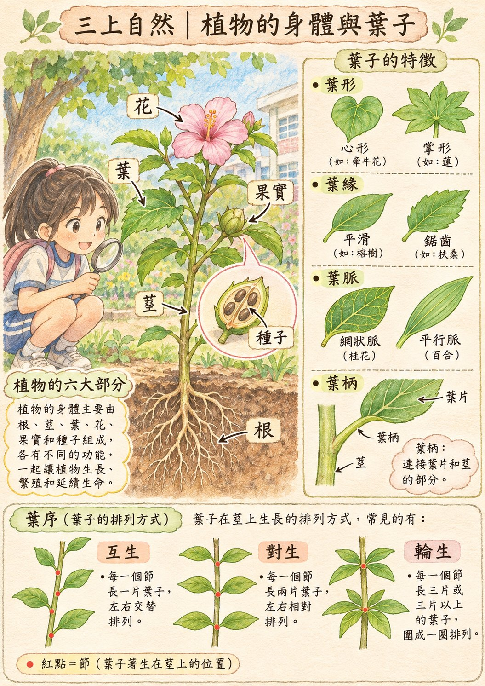
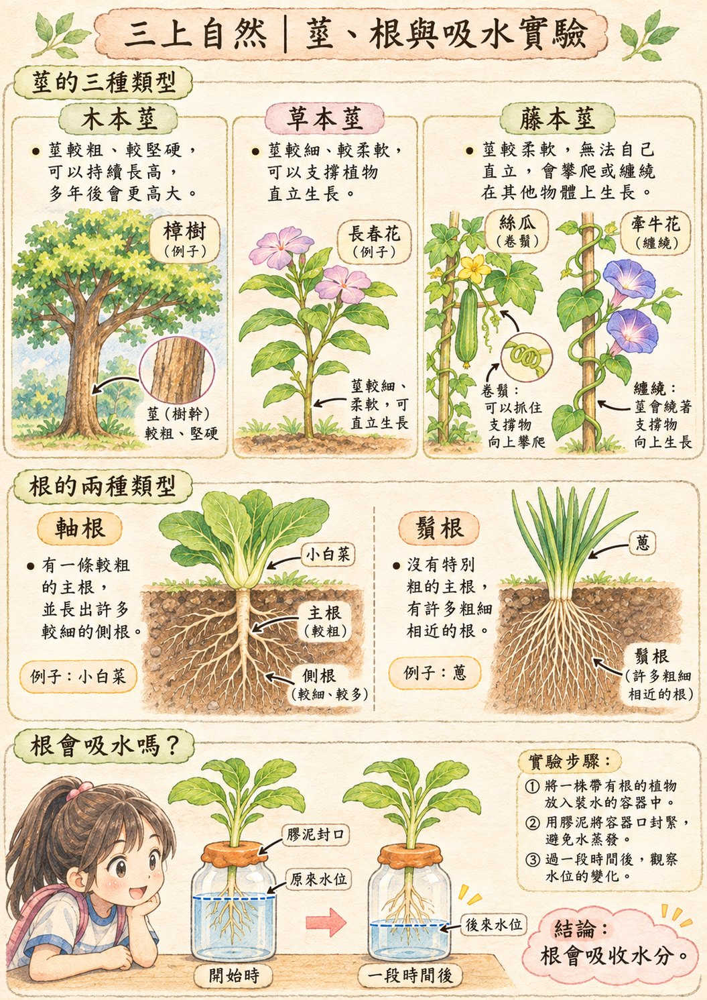
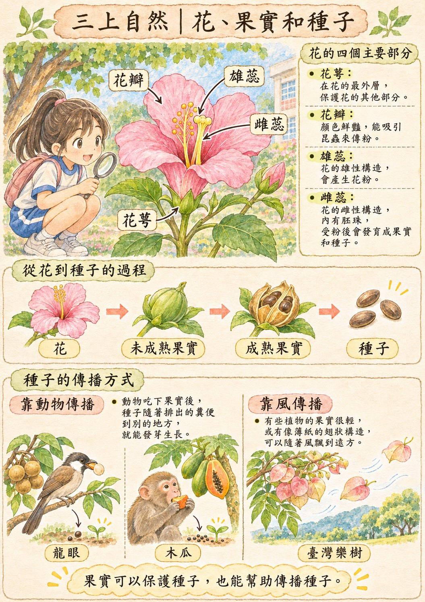
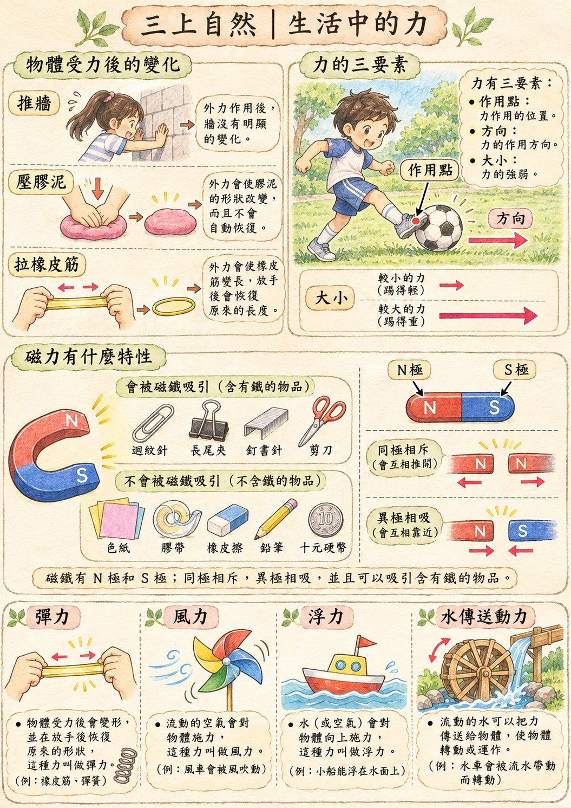

自然 重點整理
康軒 自然科學 三上。期中考只考第 1 單元 多采多姿的植物、第 2 單元 生活中的力（課本 p.12–73），預設只顯示這兩個單元。第 3、4 單元留給下次段考，按「全冊」就看得到。
範圍：
黃色底＝老師上課畫的重點 ✍️＝老師手寫補充 ⚠＝容易弄錯
科學研究方法與安全守則（p.2–9）
察覺現象 → 提出問題 → 推測 → 計畫 → 觀察／實驗 → 結果 → 討論 → 結論
- 推測：回想以前的經驗或蒐集資料。計畫：決定材料和步驟，也要考慮影響實驗的因素（例如溫度）。
- 結果可以用圖表整理。實驗結果和推測不一樣時，要重新提出推測（不可以改結果）。
- 用五感探索：視覺（眼睛）、聽覺（耳朵）、味覺（嘴巴）、嗅覺（鼻子）、觸覺（手）。
- 觀察植物時：不要採摘或食用；不要觸摸長尖刺或會分泌乳汁的植物。
第 1 單元 多采多姿的植物
活動 1 植物是什麼（p.14–17）
自然環境中有生命的是「生物」，沒有生命的是「非生物」。生物中有些是「動物」，有些是「植物」。
- 植物的身體大部分可以分成「根、莖、葉、花、果實和種子」六大構造。
- 不同植物外形不一樣（榕樹高、長春花矮、牽牛花不能直立），但都有葉子和莖。
⚠ 植物不會移動，但有生命、會長大，所以植物是生物。
活動 2 植物如何獲取陽光和水（p.18–30）

一張圖看懂植物的六大部分和葉子：葉形、葉緣、葉脈、葉柄，還有互生、對生、輪生三種葉序（紅點是節）。
注意：圖中「掌形（如：蓮）」的例子不對，蓮的葉子是圓形；掌形可以想成楓葉。（點圖可以放大）
葉
- 植物構造中最明顯的是葉子。葉子有很多種形態，是分辨不同植物的依據之一。細長葉子適應寒冷或風大的環境。
- 葉子是從莖上的「節」長出來的。節附近小小的突起是芽：枝條頂部＝頂芽；葉腋＝側芽（腋芽）。
- 葉子在莖或枝條上的排列方式，稱為「葉序」。葉子相互錯開生長，讓下方的葉子也能接收到陽光。
莖

三種莖（木本、草本、藤本）、兩種根（軸根、鬚根），以及「根會吸水嗎？」實驗：膠泥封口、水位下降，所以根會吸收水分。（點圖可以放大）
植物的莖可以「支撐植物的身體」，讓植物往「陽光」的方向生長。
根
- 根能抓住土壤、固定植物，也能吸收水分。榕樹的根長得深，所以長得高；牛筋草的根淺。
實驗：植物的根會吸水嗎？（p.30）
- 察覺現象：忘記澆水，葉子會下垂；澆水後葉子又挺起來。
- 把植物的根放進裝水的容器，用膠泥封住容器口，在水位處做記號，放在通風良好的地方。
- 一段時間後，水位下降。
結論：植物生長所需的水是由「根部」吸收。膠泥封口是為了不讓水從瓶口跑掉，才能確定水是被根吸走的。
活動 3 花、果實和種子有什麼功能（p.31–43）

花的四個部分（花萼、花瓣、雄蕊、雌蕊）、花 → 果實 → 種子的過程，和種子靠動物或風傳播。（點圖可以放大）
- 一朵花的基本構造有「花萼、花瓣、雄蕊和雌蕊」。✍️ 雄蕊頂端有花粉；雌蕊通常一根、在中間（老師寫「大蕊」「小蕊」幫助記憶）。
- 鮮豔的花瓣、花蜜、特殊的氣味可以吸引動物，幫助雄蕊的花粉傳到雌蕊，讓植物繁衍後代。
- 四季的花：春＝山櫻花、杜鵑；夏＝金針花、荷花；秋＝臺灣欒樹；冬＝梅花。
- 大部分植物開花後會結出「果實」，果實裡面有「種子」：花 → 未成熟果實 → 成熟果實（月橘、番石榴）。
- 果實可以「保護種子」，還能「幫助傳播種子」，讓種子在適合的地方長成新植物。
植物與生活
- 植物能美化環境、作為動物的食物、讓動物棲息。
- 科學閱讀：薄荷、九層塔、香茅、迷迭香的特殊氣味讓昆蟲不敢靠近，是植物保護自己的方法。薄荷加在冰淇淋、糖果；九層塔用在三杯雞。
- 科學漫畫：生石花像石頭的部分是葉子；厚葉子保持水分，長得像石頭可以避免被動物吃掉。
學習筆記（p.44–45）：花＝結果實；果實＝裡面有種子；葉＝陽光照射製造養分；莖＝支撐身體；根＝吸收水分、固定植物。
第 2 單元 生活中的力

第 2 單元總覽：受力後的變化、力的三要素、磁力（只吸鐵製品、同極相斥、異極相吸），以及彈力、風力、浮力、水傳送動力。（點圖可以放大）
活動 1 力的現象有哪些（p.48–53）
物體受力後的變化
- 物體受力時，有些物體的形狀會改變；不再受力後，有的會恢復，有的不會。形狀不一定會改變。
- 物體受力時，運動狀態可能會「變快」，也可能「變慢」或「停止」。踢靜止的球 → 移動；擋住滾來的球 → 停下來。
力的三要素（作用點、方向、大小）
踢球要進球門：方向要正確、大小也要夠。✍️ 拋球的箭頭向上（球向上移動），壓球的箭頭向下。投棒球給別人要注意力的大小和方向。
活動 2 磁力有什麼特性（p.54–61）
- 「鐵製」的物品才能被磁鐵吸住：✍️ 迴紋針、長尾夾、釘書針、剪刀 ✓；色紙、膠帶、橡皮擦、鉛筆、十元硬幣 ✕。
- 磁鐵兩端吸住的迴紋針最多。磁力比較強的部位稱為「磁極」，分別是「N 極」、「S 極」。長條形、U 形、圓形磁鐵都有 N 極和 S 極。
- 用「吸住迴紋針的數量」可以比較磁力強弱。
- 磁極具有「同極相斥」、「異極相吸」的特性：N–N、S–S 互相推開；N–S 吸在一起。
- 磁鐵包在塑膠袋裡，可以把鐵粉和沙土分離（抽出磁鐵後鐵粉就掉下來）。
- ✍️ 老師補充：推、拉、踢要碰到物體才有作用＝接觸力；磁力不用碰到就能作用＝超距力。
活動 3 還有什麼不一樣的力（p.62–69）
- 物體放入水中，會受到「向上」的力，稱為「浮力」。浮力不夠時，物體會沉入水中。
- 膠泥實驗：用形狀與重量都相同的膠泥，只改變形狀。原本會沉的物體做成「容器形狀」（碗、船），比較容易浮。
- 水也可以使物體移動、「傳送動力」：流水推動扇葉，再接觸下一個扇葉，水車就持續轉動。
- 科學閱讀：提款卡、存摺的磁條不能靠近磁鐵，訊息會消失；服飾店防盜磁扣用強力磁鐵打開。
考試陷阱（一、二單元）
- ⚠「金屬都會被磁鐵吸住」✕ → 只有鐵製的才會，十元硬幣不會。
- ⚠「物體受力，形狀一定會改變」✕ → 推牆時牆不會變。
- 相同的磁極會互相推開，不會吸在一起；磁鐵兩端磁力最強，不是中間。
- 葉序數「一個節長幾片葉」：1 互生、2 對生、3 以上輪生。
- 蔥、蒜是鬚根；小白菜、菠菜、莧菜是軸根。
- 牽牛花、絲瓜是藤本莖；長春花、大花咸豐草是草本莖；樟樹、木棉、青楓是木本莖。
- 根吸水實驗的水位會下降；浮力的方向是向上。
- 箭頭＝方向，線段長短＝大小，不要記反。
- 房屋、家具、拼板舟、木棧道都是用植物的莖做的，不是根。
- p.72–73「飄浮的迴紋針」課本註明不評量。
第 3 單元 奇妙的空氣期中不考
活動 1 空氣在哪裡（p.76–83）
- 石頭、水和空氣都是地球上的物質。空氣看不見，但空氣是無所不在的：塑膠袋捏住袋口放進水中、擠壓海綿或放入粉筆，都會冒出氣泡。
- 紙團實驗：紙團塞緊在杯底，杯子垂直倒放壓入水中，再垂直拿出來 → 紙團沒有溼。結論：空氣和石頭、水一樣，都占有空間。
- 空氣占有空間且沒有固定形狀：游泳圈、籃球、漂浮床充氣；餅乾包裝（避免碎裂）、氣泡袋（避免碰撞）。真空收納袋是把空氣排出，節省空間。
⚠ 杯子歪斜放入，空氣會從杯口跑掉（冒泡），水跑進去，紙團就溼了。
活動 2 空氣還有什麼特性（p.84–90）
- 注射筒前貼紙條，推活塞 → 紙條飄動。風是空氣流動所形成的現象。
- 空氣流動得越快，風就越強：頭髮、旗子飄得越高，風車轉得越快，風越強。
- 注射筒拉到 20 毫升，筒口抵住橡皮擦（不讓空氣跑掉），壓活塞 → 壓得下去但壓不到底；放開 → 彈回去。結論：空氣占有空間，可以被壓縮。
- 空氣發射器（注射筒＋胡蘿蔔片）：被壓縮的空氣能傳送力量、快速流動，使物體移動。不可以對人發射。
活動 3 乾淨空氣重要嗎（p.91–95）
- 生物都需要空氣才能生存。空氣也能讓游泳圈浮在水上、風幫蒲公英傳播種子、推動風帆。
- 汙染來源：砍伐森林（塵土飛揚）、燃燒稻草和廢棄物（濃煙）、工廠和汽機車廢氣。
- 維護方法：風力發電等低汙染發電、搭大眾運輸、騎腳踏車、少砍伐多種樹。
- 吸盤本身沒有吸力，用力按壓把裡面的空氣擠出去，外面的空氣把吸盤壓在平面上；掀開邊緣讓空氣進去就能取下。
第 4 單元 廚房裡的科學期中不考
活動 1 如何辨認廚房中的材料（p.102–110）
- 用感官觀察：看顏色、外觀；摸顆粒大小；聞氣味（先用手搓一搓再聞）。不可以把實驗材料放入口中。
- 溶解：物質加入水中後，與水均勻混合的現象（砂糖顆粒慢慢看不見）。
- 實驗：5 杯各 100 毫升水，各加 1 平匙，攪拌 1 分鐘。攪拌棒要洗乾淨才能用。
- 讀量筒：眼睛平視水位中央最低處。1 平匙：用玻璃棒刮平湯匙。
- 生活中的溶解：煮湯加鹽、紅茶加糖、維他命 C 發泡錠、洗衣粉、清潔餐具加小蘇打粉。
- 分離食鹽和沙子：加水溶解食鹽 → 用濾網過濾 → 得到食鹽水和沙子。
活動 2 如何增加物質溶解的量（p.111–115）
- 50 毫升常溫水一匙一匙加食鹽，直到有溶不掉的顆粒 → 大多數物質在水中溶解的量是有限的。
- 常溫水和熱水各 50 毫升、各加 4 平匙 → 熱水杯底顆粒較少。溫度會影響溶解的量，水溫較高，溶解的量較多。增加水量也可以。
⚠ 攪拌只能加快溶解速度，不能增加溶解的量。
活動 3 怎麼辨認水溶液的酸鹼（p.116–127）
- 酸性水溶液聞起來常有酸酸的氣味，但只靠感官無法準確判斷酸性、中性或鹼性。黑胡椒粒不能完全溶解，無法判別酸鹼。
- 紫色高麗菜汁：切細絲 → 熱水浸泡 → 冷卻後過濾。滴管：先輕壓吸頭 → 放入汁液 → 緩慢放開吸取 → 輕壓讓汁液流出。
- 蝶豆花汁加檸檬汁會變色；紫色葡萄皮、紅鳳菜葉的汁液也會隨酸鹼變色。
- 科學閱讀：肥皂、洗碗精會和油汙結合再被水帶走；小蘇打水洗汗漬、檸檬酸水洗水垢。
- 科學漫畫：氣泡水裡溶解了二氧化碳，氣體也能溶解在水中。
附錄
葉子特徵比對卡（p.137–140，配合 p.18–19）
雙語詞彙（p.141）
依據康軒版自然三上課本 p.2–144 及老師課本劃記整理。p.72–73、98–99、130–136 課本註明不宜評量。